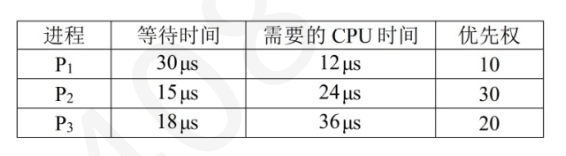
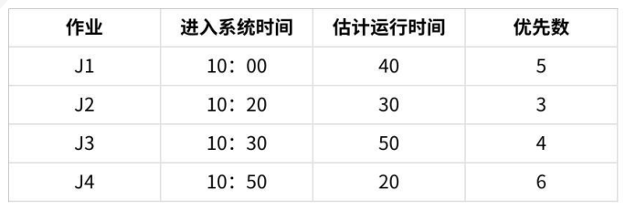
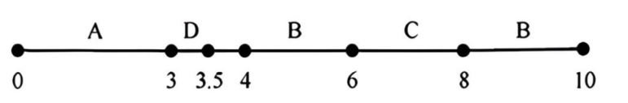
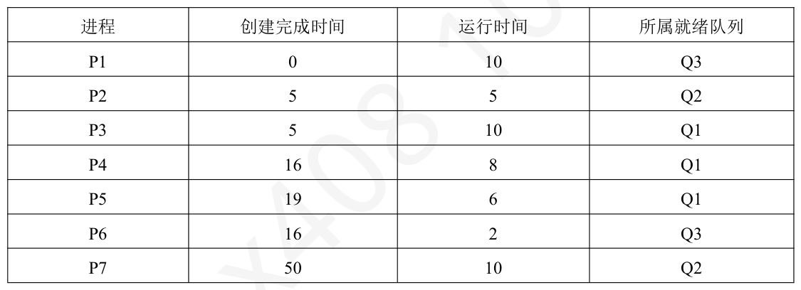
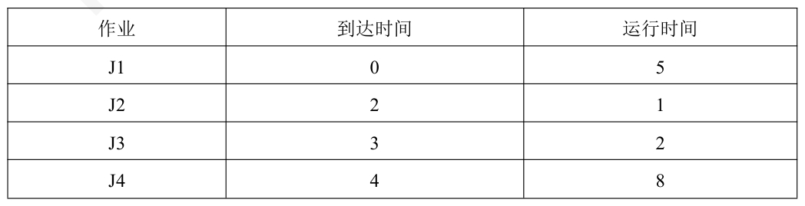
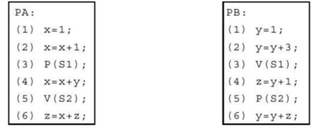
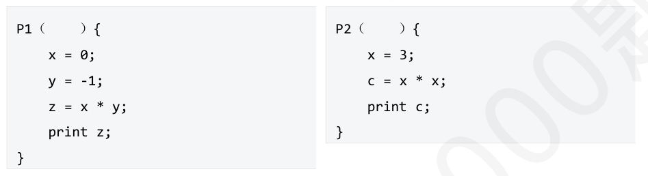
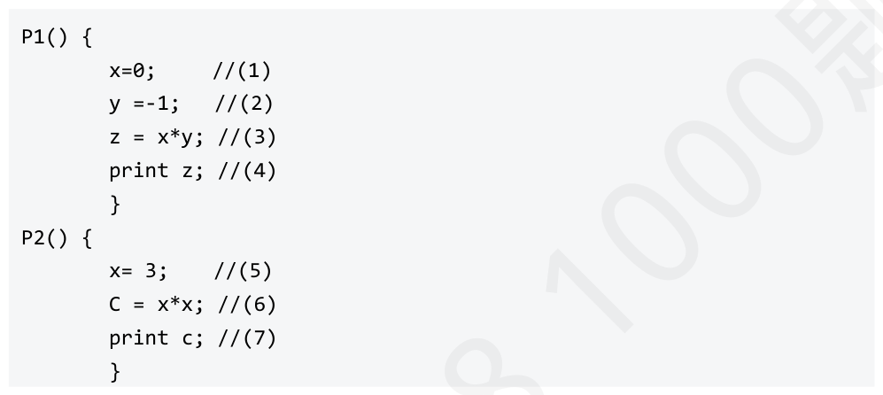

第 61 题
下列选项中，不应降低进程优先级的时机是（ ）。
A． 进程在一次调度中已执行了较长的时间，但仍未完成。 B． 进程因频繁发生缺页中断而被系统判定为“抖动”状态。 C． 进程是一个I/O 密集型任务，在完成短暂的CPU 执行后主动请求I/O 操作。 D． 在多级反馈队列调度算法中，进程在一个较高优先级队列中用完了其分配的时间片。 答案与解析 答案：C
A，D 描述的是一种情况。在多级反馈队列调度算法中，当一个进程在高优先级队列中用完了其（通常较短的）时间片但仍未完成时，它会被移至一个优先级较低、时间片较长的队列中。这本身就是一种降低优先级的体现，目的是照顾短作业和交互式进程，同时防止长作业饿死。 B，进程“抖动”意味着它分配到的物理内存不足，导致频繁的页面换入换出，CPU 大部分时间用于处理缺页中断而非有效计算，这会严重降低系统性能。此时，降低该进程的优先级，甚至暂停该进程的运行，以释放资源给其他进程，是一种合理的系统调整策略。 C，I/O 密集型进程的特点是CPU 执行时间短，大部分时间在等待I/O 完成。为了提高系统整体效率和I/O 设备的利用率，操作系统通常会倾向于提高这类进程的优先级，以便它们在I/O 完成后能尽快获得CPU，再次发起新的I/O 请求，从而保持I/O 设备的繁忙。降低这类进程的优先级反而会延长其周转时间，降低系统对I/O 操作的响应速度。
教材第 131 页 第 62 题
下列进程调度算法中，不会导致饥饿现象的有（ ）
A． Ⅰ和Ⅱ B． Ⅱ和Ⅲ C． Ⅰ和Ⅳ D． Ⅱ、Ⅲ、Ⅳ 答案与解析 答案：C
Ⅰ、Ⅳ先来先服务算法和时间片轮转算法都不会出现饥饿现象，因为它们都是按照进程到达的顺序或固定的时间片来调度的，不会因为进程的特征而忽略某些进程。
教材第 131 页 第 63 题
下列关于时间片轮转调度算法及其实现基础的叙述中，说法正确的有（ ）
A． 仅Ⅰ、Ⅱ B． 仅Ⅰ、Ⅱ、Ⅳ C． 仅Ⅱ、Ⅲ、Ⅳ D． Ⅰ、Ⅱ、Ⅲ、Ⅳ 答案与解析 答案：D
Ⅰ正确，时间片轮转算法中，时间片大小的选择是一个关键问题。如果时间片设置得过短，CPU 会在进程间频繁切换，而每次上下文切换都需要消耗系统资源（保存和恢复现场等），导致系统整体开销增大，有效工作时间减少。 Ⅱ正确，时间片轮转调度的核心机制是通过时钟中断来实现的。操作系统设置一个定时器，每当一个时间片结束时，定时器会产生一个时钟中断。CPU 响应中断后，会转去执行时钟中断处理程序，该程序会剥夺当前运行进程的CPU 使用权，并调用调度程序选择下一个就绪进程投入运行。 Ⅲ正确，在时间片轮转调度中，如果一个进程在其分配的时间片内没有执行完毕，当中断到来时，该进程会被剥夺CPU，其状态从执行态转换为就绪态，并被重新放回就绪队列的末尾，等待下一轮调度。如果进程在时间片用完前就已经完成，则会进入终止态。注意：有些同学可能考虑到时间片用完时，恰好进程执行完毕，因此此时是从运行态转变为退出态；但是一般来说，时间片用完时，进程的状态会被直接转为就绪态，然后在下一次调度时被处理(检查到执行结束再退出)。 Ⅳ正确，时间片轮转调度算法需要将所有处于就绪态的进程组织在一个队列中，这个队列通常被称为就绪队列。当进行调度时，调度程序会按照先进先出（FCFS/FIFO）的原则从就绪队列的头部选择下一个进程分配CPU。进程控制块（PCB）、时钟中断处理程序和进程就绪队列是实现时间片轮转调度的关键数据结构或程序。
教材第 131 页 第 64 题
下列选项中，能够引起或允许进程调度的有（ ）
A． 仅Ⅰ、Ⅱ B． 仅Ⅲ、Ⅳ C． 仅Ⅰ、Ⅱ、Ⅲ D． Ⅰ、Ⅱ、Ⅲ、Ⅳ 答案与解析 答案：D
下面给出常考查的进程调度时机： • 可以调度创建新进程后进程正常结束或异常终止（选项Ⅰ）进程因I/O 请求、信号量操作等原因阻塞（选项Ⅱ） I/O 完成后出现高优先级紧急任务（选项Ⅲ）进程处于普通临界区进程从内核态返回用户态时（选项Ⅳ、【2012-30】选项D） • 不可调度进程处理中断的过程中进程执行原子操作中进程处于内核程序临界区关中断状态下综上所述，选D。
教材第 131 页 第 65 题
下列调度算法中，不宜设计为抢占式调度的是（ ）
A． 时间片轮转 B． 优先级 C． 高响应比优先 D． 多级反馈队列调度算法 答案与解析 答案：C
C 选项，高响应比优先调度算法通常是非抢占式的。它在选择下一个要执行的作业或进程时，会计算所有就绪作业/进程的响应比（响应比= (等待时间+要求服务时间) /要求服务时间），然后选择响应比最高的。一旦选定，该作业/进程会一直执行下去。将其设计成抢占式会比较复杂且不常见，因为响应比是动态变化的，频繁地重新计算和抢占会增加系统开销。
教材第 132 页 第 66 题
下列选项中，不应该提高进程优先级的场合是（ ）。
A． 进程发生“饥饿”现象 B． 用户需要一个进程在规定时间内完成 C． 进程等待的I/O 操作完成，进入就绪队列 D． 进程时间片耗尽 答案与解析 答案：D
进程发生饥饿时，应当增加其优先级，使其有机会使用处理器；当用户需要一个进程在规定时间完成时，也应该给予其高优先级以让该进程可以立即运行；/0 操作完成后，可以适当提高进程优先级，A、B、C 均是提高优先级的场合。当时间片耗尽后，显然不应该提高其优先级，否则该进程可能再次使用处理器，导致其他进程无法得到处理器资源。一般来说，D 选项的情况下应该降低优先级。
教材第 132 页 第 67 题
下列关于调度算法的叙述中，正确的有（ ）
A． 仅Ⅰ、Ⅱ B． 仅Ⅱ、Ⅳ C． 仅Ⅰ、Ⅲ、Ⅳ D． 仅Ⅱ、Ⅲ、Ⅳ 答案与解析 答案：B
Ⅰ错误，先来先服务（FCFS）调度算法对所有类型的进程都是公平的，即按照它们到达的顺序进行服务。然而，如果一个长作业（通常是处理器密集型）先到达，它会长时间占用CPU，导致后续的短作业（包括I/O密集型进程，它们通常CPU执行时间短）长时间等待。因此， FCFS 算法通常不利于短作业和I/O 密集型进程，而相对有利于长作业（处理器密集型进程，一旦获得CPU 可以长时间使用）。 Ⅱ正确，时间片轮转（RR）调度算法为每个就绪进程分配一个固定的时间片，进程在该时间片内运行。当时间片用完后，即使进程未完成，也会被剥夺CPU，CPU 转给下一个就绪进程。这种机制保证了每个进程都能在较短的时间内得到响应，非常适合需要快速响应用户输入的人机交互环境，是分时操作系统的常用调度算法。 Ⅲ错误，抢占式调度算法允许高优先级进程抢占低优先级进程的CPU。虽然这可以保证重要任务的及时执行，但如果系统中持续有高优先级进程到达，低优先级进程可能会长时间甚至永远得不到CPU，从而产生饥饿现象。例如，在抢占式优先级调度中，如果低优先级进程的优先级始终无法提升，就可能饿死。 Ⅳ正确，多级反馈队列调度算法通过设置多个不同优先级的就绪队列，并为每个队列分配不同的时间片大小，同时允许进程在不同队列间移动。这种机制能够较好地兼顾不同类型进程的需求： • 对于交互型进程或短作业，它们可以在高优先级队列中获得较短的时间片并快速得到响应和完成。 • 对于处理器密集型或长作业，它们会逐渐从高优先级队列降到低优先级队列，获得较长的时间片，避免了因在高优先级队列中频繁切换而带来的开销，同时也保证了它们最终能够得到执行，避免了饥饿。
教材第 132 页 第 68 题
影响时间片轮转调度算法对进程响应时间的因素有（ ）
A． 内存容量 B． IO 设备的速度 C． 外存容量 D． 交互进程的数量 答案与解析 答案：D
分时系统的响应时间T 可以表达为：T≈QxN，其中Q 是时间片，而N 是交互进程数量。因此，对进程响应时间的因素主要有：“时间片值的选取”和“交互进程的数量”。当时间片一定，交互进程的数越多（即N 越大），T 就越大。所以选择D。
教材第 132 页 第 69 题
多级反馈（Feed Back）进程调度算法具备的特性有（ ）
A． 仅Ⅰ、Ⅱ B． 仅Ⅰ、Ⅱ、Ⅳ C． 仅Ⅱ、Ⅲ、Ⅳ D． Ⅰ、Ⅱ、Ⅲ、Ⅳ 答案与解析 答案：B
Ⅲ错误，多级反馈队列调度算法需要维护多个队列，并在进程执行过程中根据其行为在不同队列间移动进程，这会带来一定的调度开销。相比于简单的调度算法（如先来先服务），其系统开销通常要大一些。虽然它试图通过优化调度来提高整体性能，但算法本身的复杂性决定了其开销不会小的。Ⅳ.通过多级队列和反馈机制，可以避免低优先级进程长时间得不到调度的问题。即使一个进程被降级到最低优先级的队列，它仍然有机会获得CPU 资源，从而避免饥饿现象的发生。此外，在较低优先级队列中等待时间过长的进程会被移到更高优先级队列，这种形式的老化阻止饥饿的发生（极端情况下仍有可能发生饥饿）
教材第 132 页 第 70 题
一个正在访问临界资源的进程由于申请I/O 操作而被阻塞时（ ）
A． 可以允许其他进程进入该进程的临界区 B． 不允许其他进程进入临界区和占用CPU 执行 C． 可以允许其他就绪进程占用CPU 执行 D． 不允许其他进程占用CPU 执行 答案与解析 答案：C
一个正在访问临界资源的进程由于申请I/O操作而被阻塞时，进程调度程序将调度其他就绪进程占用CPU执行，但禁止其他进程进入访问该临界资源的临界区。
教材第 132 页 第 71 题
下列说法正确的是（ ）
A． 进程从运行态变为阻塞态是由于时间片到期 B． 进程可以自身决定从运行态转换为阻塞态 C． 在抢占式进程调度下，现运行进程的优先级不低于系统中所有进程的优先级 D． 在任何情况下采用短作业优先调度算法都能够使作业的平均周转时间最小 答案与解析 答案：B
A 错误。进程从运行状态变为阻塞状态是由于发生了某个等待事件。 B 正确。进程从运行态到就绪态或从就绪态到运行态都是由进程调度程序决定的，从阻塞态到就绪态则取决于该进程所等待的外部事件是否完成。而从运行态到阻塞态是由运行进程自身决定的，即运行进程因某个等待事件发生而将自己阻塞。 C 错误。运行进程的优先级一定高于就绪队列中所有进程的优先级，但不一定比阻塞队列中进程的优先级高。 D 错误。如果短作业总是在长作业已经投入运行后到达，那么作业的平均周转时间就不一定最小。
教材第 132 页 第 72 题
在操作系统中，进程调度的过程包括以下主要操作。
A． ①→②→③→④ B． ②→①→③→④ C． ③→①→④→② D． ②→③→①→④ 答案与解析 答案：B
当进程调度时，需要进行以下主要操作。
教材第 132 页 第 73 题
关于进程优先级的论述中，错误的是（ ）。
A． 系统进程的优先级一般高于用户进程 B． IO 密集型进程优先级高于处理器密集型进程 C． 对资源要求少的进程优先级一般高于对资源要求多的进程 D． 优先级可以由用户自定义，但是只能是静态的 答案与解析 答案：D
优先级分为静态优先级和动态优先级，用户可以自定义各个进程的静态优先级，也可以定义动态优先级的计算公式：例如高响应比优先调度算法，就是一种动态优先级调度算法，响应比计算公式就可以由用户定义，所以D 选项错误。A、B、C 选项都是确定优先级时常用的原则。
教材第 133 页 第 74 题
有3 个作业：A（到达时间8:45，执行时间1.5h），B（到达时间9:00，执行时间0.5h），C （到达时间9:30，执行时间0.5h）。当9:30 作业全部到达后，操作系统按照非抢占式高响应比优先调度算法进行调度，则作业被选中执行的顺序是（）。
A． （A，B，C） B． （B，A，C） C． （B，C，A） D． （C，B，A） 答案与解析 答案：C
教材第 133 页 第 75 题
考虑在单纯时间片轮转算法中实现“优先级调度”，即优先级越高的进程一次分配的时间片越多。有进程A、B、C、D、E 依次几乎同时达到，其预计运行时间分別为10、6、2、4、8 其优先级数分别是3、5、2、1、4，一个优先级数对应一个时间片。对于前一个进程时间片有剩余的情况，操作系统会调度下一个进程运行。这种情况下总周转时间是（）
A． 92 B． 102 C． 112 D． 122 答案与解析 答案：C
进程调度顺序为A→B→C→D→E→A→B→D→E→A→D→A→D各进程周转为：A-29，B-19，C-10，D-30，E-24总周转时间为：112
教材第 133 页 第 76 题
某系统采用基于优先权的非抢占式进程调度策略，完成一次进程调度和进程切换的系统时间开销为1us。在T 时刻就绪队列中有3 个进程P1、P2 和P3，其在就绪队列中的等待时间需要的CPU 时间和优先权如下表所示。若优先权值大的进程优先获得CPU，从T 时刻起系统开始进程调度，系统的平均带权周转时间为 （）（保留两位小数）

A． 3.98 µs B． 4.13 µs C． 4.21 µs D． 4.72 µs 答案与解析 答案：C
带权周转时间是指作业周转时间与作业实际运行时间的比值：带权周转时间=作业周转时间/作业实际运行时间。平均带权周转时间是指多个作业带权周转时间的平均值。由优先权可知，进程的执行顺序为P2→P3→P1。P2 的周转时间为1+15+24=40us；P3 的周转时间为18+1+24+1+36=80us；P1 的周转时间为30+1+24+1+36+1+12=105us。三个进程的带权周转时间分别为：P1：105/12=8.75us，P2：40/24≈1.67us，P3：80/36≈2.22us。平均带权周转时间为 （8.75+1.67+2.22）/3≈4.21us
教材第 133 页 第 77 题
假设在单处理机两道程序设计环境下，有4 个作业，它们进入系统的时间如表所示，作业调度采用短作业优先调度算法，进程调度采用优先级抢占式调度算法。这里规定：优先数越小优先级越高。忽略其他辅助操作的占用时间。平均周转时间为（）

A． 70 分钟 B． 65 分钟 C． 75 分钟 D． 80 分钟 答案与解析 答案：A
J1 进入内存时间为10:00，运行结束时间为11:10，周转时间为70 分钟。J2 进入内存时间为10:20，运行结束时间为10:50，周转时间为30分钟。J3 进入内存时间为11:10，运行结束时间为12:00，周转时间为90分钟。J4 进入内存时间为10:50，运行结束时间为12:20，周转时间为90分钟。平均周转时间为：(70+30+90+90)/4=70 分钟。
教材第 133 页 第 78 题
下图为单处理器系统中各个进程运行时占用CPU 的时间。当T0=0s 时，进程A、D 被创建并进入就绪队列，调度程序首先为进程A 分配CPU；当T1=3s 时，进程A 执行结束，同时进程D 被调度程序选中，不考虑调度开销；当T2=3.5s 时，进程D 执行结束；当T3=4S 时，进程B 被创建，并进入就绪队列开始执行；当T4=6s 时，进程被创建并进入就绪队列，进程C 的优先级高于进程B，系统是可抢占的，进程C 抢占进程B 的CPU；当T5=8s 时，进程C 执行结束，调度程序重新调度进程B；当T6=10s 时，进程B 执行结束。在下列说法中，正确的是（）。

A． Ⅰ、Ⅱ B． Ⅱ、Ⅲ C． Ⅰ、Ⅱ、Ⅲ D． Ⅰ、Ⅱ、Ⅲ、Ⅳ 答案与解析 答案：D
Ⅰ正确，在0~10s 的时段内，只有3~3.5s间CPU未运行程序，因此CPU的利用率为9.5/10 = 95%。 Ⅱ正确，进程A 的周转时间为3s-0s=3s，进程D 的周转时间为3.5s-0s=3.5s，进程B 的周转时间为10s-4s=6s，进程C 的周转时间为8s-6s=2s，因此平均周转时间为(3s+3.5s+6s+2s)/4=3.625s。 Ⅲ正确，进程D的等待时间为3s，进程B 的等待时间为2s，进程A、C 的等待时间都是0s，因此进程D的等待时间最长。 Ⅳ正确，进程A 的带权周转时间为3/3=1s，进程B 的带权周转时间为6/4=1.5s，进程C 的带权周转时间为2/2=1s，进程D 的带权周转时间为3.5/0.5=7s，因此，进程A、B、C 和D 的平均带权周转时间为(1s+1.5s+1s+7s)/4=2.625s。于是，选项Ⅰ~Ⅳ都正确。
教材第 133 页 第 79 题
在多级队列调度算法中，系统中维护三个就绪队列Q1、Q2、Q3，其中各队列的优先级为： Q1>Q2>Q3，在每个队列内部均采用短进程优先策略，一次进程调度和切换的时间开销为2ms（不考虑切换到首个进程的开销），各进程的就绪时问如下表所示：本系统采用非抢占式调度，则各进程的平均周转时间为（）

A． 21.74 B． 14.43 C． 19.63 D． 24.06 答案与解析 答案：A
教材第 134 页 第 80 题
某单处理器单道操作系统中，使用多级反馈队列调度算法，队列1、2、3 优先级递减，其中，队列1 采用时间片轮转调度，时间片大小为2；队列2 采用时间片轮转调度，时间片大小为4；队列3采用先来先服务调度。则这4 个作业的周转时间之和为（ ）

A． 25 B． 27 C． 28 D． 29 答案与解析 答案：A
多级反馈队列调度算法涉及抢占和进程在各级队列间的移动。周转时间之和为10+1+2+12=25。 J1:0 时刻到达。0-2 时刻运行，2 时刻进入2 级队列，7-10 时刻运行，周转时间为10。 J2:2 时刻到达。2-3 时刻运行，周转时间为1。 J3:3 时刻到达。3-5 时刻运行，周转时间为2。 J4:4 时刻到达。5-7时刻运行，7时刻进入2 级队列；10-14时刻运行，14时刻进入3 级队列； 14-16时刻运行。周转时间为12。
教材第 134 页 第 81 题
考虑下面的基于动态改变优先级的可抢占式优先权调度算法。大的优先权数代表高优先级当一个进程在等待CPU 时（在就绪队列中，但未执行），优先权以速率α改变；当它运行时，优先权以β速率改变。所有的进程在进入就绪队列时被给定的优先权数为0。参数α和β可以设定给许多不同的调度算 ）的设定可以实现进程FIFO(First In First Out) 法。下列（
A． β>α>0 B． α>β>0 C． β<α<0 D． α<β<0 答案与解析 答案：A
假设进程M先于进程N 进入就绪队列。PM和PN 分别表示M 和N 的优先权数。在β>α>0 设定下，在就绪队列中，PM>PN，原因是α>0，则越早进入就绪队列，优先数就越大，所以是FCFS(First Come First Service)。又因为β>α，所以在M运行时，PM增长速度大于PN 的增长速度，则PM>PN，从而保证了M 进程先于N 进程完成，即FIFO(First In First Out)。在α>β>0 设定下，还是FCFS，原因跟β>α>0一样。但由于α>β，所以在M运行时，无法保证PM仍然大于PN，即无法保证FIFO。在β<α<0 设定下，在就绪队列中，PM<PN，原因是α<0，则越早进入就绪队列，优先数就越小，所以是LCFS(Last Come First Service)。又因为β<α，所以在N 运行时，PN下降速度大于PM的下降速度，有可能出现PM>PN的情况，此时CPU 有可能被M抢占，无法保证LIFO(Last In First Out)。在α<β<0设定下，还是LCFS，原因跟β<α<0一样。但由于α<β，在N 运行时，PN的下降速度变慢了，从而保证了PN始终大于PM，导致N进程先于M进程完成，即LIFO。所以本题的答案选A。
教材第 134 页 第 82 题
下列关于多处理机调度的说法中正确的有（ ）
A． 仅Ⅰ、Ⅱ、Ⅲ B． 仅Ⅰ、Ⅱ、Ⅳ C． 仅Ⅰ、Ⅲ、Ⅳ D． Ⅰ、Ⅱ、Ⅲ、Ⅳ 答案与解析 答案：B
多处理机调度为2025 年大纲新增考点。本题命制依据2026 王道操作系统2.2.6多处理机调度。 Ⅰ正确，公共就绪队列：所有处理器从同一个队列中获取任务，当一个处理器完成其任务变为空闲时，它会去公共队列中领取新的任务。这种机制使得任务能够自动地在空闲处理器间分配，从而天然地实现了负载均衡。私有就绪队列：每个处理器拥有自己的就绪队列。当一个进程或线程在某个处理器上运行时，它通常会被放回该处理器的私有就绪队列。这有助于该任务下次被调度时仍在同一个处理器上运行，从而可以利用该处理器高速缓存中可能存在的该任务的数据，这就是所谓的处理器“亲和性” （Processor Affinity）。 Ⅱ正确，公共就绪队列是所有CPU 共享的数据结构。当多个CPU 同时尝试访问（例如，添加或移除进程/线程）这个共享队列时，如果不进行同步控制，可能会导致数据结构损坏或不一致。因此，必须使用锁机制（如自旋锁、互斥锁）来确保在任何时刻只有一个CPU 能够修改公共就绪队列，从而保证操作的互斥性和原子性。 Ⅲ错误，软亲和指由进程调度程序尽量保证“亲和性”，硬亲和指由用户进程通过系统调用，主动要求操作系统分配固定的CPU，确保“亲和性”。 Ⅳ正确，私有就绪队列中平衡负载的方法通常有两种：推迁移和拉迁移。对于推迁移，一个特定的系统程序周期性检査每个CPU的负载，若发现不平衡，则从超载CPU的就绪队列中“推”一些进程到空闲CPU的就绪队列，从而平均分配负载。若一个CPU负载很低，则从超载CPU的就绪队列中 “拉”一些进程到自己的就绪队列，发生拉迁移。在系统中，推迁移和拉迁移常被并行实现。综上所述，选B。
教材第 135 页 第 83 题
下列关于SMP 系统中处理器调度及其相关概念的叙述中，错误的是（ ）
A． 自调度（Self-scheduling）方式下，系统中通常维护一个所有处理器共享的全局就绪队列，空闲的处理器会主动从该队列中获取任务执行。 B． 成组调度（Group scheduling）策略倾向于将一个应用程序中的多个相关线程或进程组在同一时间分配到不同处理器上并行执行，以减少它们之间的同步等待开销。 C． 动态分配（Dynamic assignment）方式下，一个进程或线程在其生命周期内可能会被分配到不同的处理器上执行，这有助于实现负载均衡，但也可能降低高速缓存的命中率。 D． 专用处理器分配（Dedicated processor assignment）策略为每个就绪线程都分配一个独立的处理器，能最大限度地提高单个应用程序的并行度，且在任何情况下都能获得最佳的系统整体性能。 答案与解析 答案：D
多处理机调度为2025 年大纲新增考点。本题命制依据汤小丹计算机操作系统慕课版10.5.3 进程（线程）调度方式。 A 正确，自调度是最简单的一种多处理机调度方式，其核心思想是设置一个所有处理器共享的公共就绪队列。当一个处理器空闲时，它会访问这个公共队列，从中取出下一个就绪的进程或线程来执行。 B 正确，成组调度的核心思想是将一个应用程序中的多个线程（尤其是那些需要相互协作、频繁同步的线程）尽可能地同时分配到不同的处理器上并行运行。这样可以减少因等待协作线程而被阻塞的情况，从而提高应用程序的执行效率和并行度。 C 正确，动态分配允许一个进程或线程在不同次被调度时，或在其执行过程中，从一个处理器迁移到另一个处理器。这样做的好处是可以根据各个处理器的负载情况动态调整，实现更好的负载均衡。然而，如果一个线程频繁在不同处理器间切换，其先前在某个处理器高速缓存中的数据就会失效，导致缓存命中率下降，影响性能。 D 错误，专用处理器分配策略是指在一个应用程序执行期间，为该应用的每个线程都分配一个固定的处理器。这种方式确实可以避免线程切换的开销，提高单个应用程序的并行度。但是，这会导致处理器的极大浪费，尤其是当线程因同步或I/O 而阻塞时，其分配到的处理器会处于空闲状态。同时，如果系统中就绪线程的总数超过了处理器的数量，那么为每个线程分配专用处理器是不现实的。此外，这种方式不一定能在所有情况下都获得最佳的系统整体性能，因为某些处理器可能会因为其分配的线程阻塞而空闲，而其他应用程序的线程可能在等待处理器。它更侧重于最大化单个高并行度应用的性能，而非系统整体的资源利用率或公平性。关于2025 年大纲新增考点“多处理机调度”，王道和汤小丹老师的教材侧重点不同，考生在复习时应熟悉两本书的考点以应对考察。
教材第 135 页 第 84 题
下列内容中，属于进程上下文的是（ ）
A． Ⅰ、Ⅲ B． Ⅰ、Ⅳ C． Ⅰ、Ⅱ、Ⅲ D． Ⅰ、Ⅱ、Ⅲ、Ⅳ 答案与解析 答案：D
如下图所示，进程上下文包括进程标识信息、进程现场信息、进程控制信息、系统内核栈、用户堆栈、用户数据块、用户程序块以及进程的虚拟地址空间。PC、PSW 都和程序执行相关，属于进程现场信息，所以Ⅰ、Ⅱ、Ⅲ、Ⅳ都属于进程上下文，答案为选项D。
教材第 135 页 第 85 题
下列关于上下文切换机制的叙述中，哪一项是不正确的？（ ）
A． 上下文切换必然涉及到CPU 从一个进程（或线程）的执行环境转换到另一个进程（或线程）的执行环境。 B． 上下文切换操作通常由操作系统内核的调度程序和分派程序协同完成，且切换过程本身在内核态执行。 C． 进程的上下文信息主要保存在其进程控制块（PCB）中，而线程的上下文信息则主要保存在其线程控制块（TCB）中。 D． 无论是进程切换还是同一进程内的线程切换，都需要完整地保存和恢复所有的通用寄存器、程序计数器、程序状态字以及整个进程的地址空间映射信息。 答案与解析 答案：D
A 正确，上下文切换的核心目的就是在处理器上停止一个进程（或线程）的执行，并开始执行另一个进程（或线程）。这必然涉及到CPU 执行环境的转换，包括指令序列、数据、寄存器状态等的改变。 B 正确，调度程序负责决定下一个要运行的进程（或线程），分派程序负责实际执行上下文切换的操作（保存旧上下文，加载新上下文）。这些都是操作系统的核心功能，涉及到对硬件状态的直接操作和对进程/线程控制块的访问，因此必须在具有特权的内核态执行。 C 正确，进程控制块（PCB）是操作系统用于描述和管理进程的数据结构，其中包含了进程的完整上下文信息，如程序计数器、寄存器值、进程状态、内存管理信息等。类似地，线程控制块（TCB）用于存储线程的独立执行上下文，如程序计数器、寄存器组、栈指针等。 D 错误，进程切换时，由于不同进程拥有独立的地址空间，因此确实需要保存和恢复包括程序计数器、程序状态字、所有通用寄存器以及与地址空间映射相关的信息（如页表基址寄存器等）。同一进程内的线程切换时，由于这些线程共享同一个进程的地址空间，因此不需要切换地址空间映射信息（如页表）。它们只需要保存和恢复各自独立的执行上下文，如程序计数器、寄存器组、栈指针和线程状态字等。线程切换的开销通常远小于进程切换，主要原因之一就是地址空间共享，无需切换内存管理信息。
教材第 135 页 第 86 题
以下两个优先级相同的进程PA 和PB 在并发执行结束后，y 的值为（）（信号量S1 和S2 的初值均为0）

A． 9 B． 15 C． 9 或15 D． 9 或11 或15 答案与解析 答案：C
将PA 和PB 进程分解为以下6 程序段，这6 程序段具有相对的完整性，都可以作为一个单独的执行过程存在。 SA1：x:=1; x:=x+1; SA2：x:=x+y; SA3：z:=x+z; SB1：y:=1; y:=y+3; SB2：z:=y+1; SB3：y:=y+z; 其中SA1与SB1可以并发执行，SA2与SB2 可以并发执行，SA3与SB3不能并发执行。因此SA3 与SB3 的执行顺序不同，可能会有不同的结果。如果先执行SA3，则y=15；如果先执行SB3，则y=9。
教材第 136 页 第 87 题
有两个并发进程P 和P2，它们的程序代码如下(其中x 为P1，P2 的共享变量)：可能打印出的z 和c 的值有（ ）。

A． z = 0 或-3；c = 0 或9 B． z = 0 或3；c = 0 或9 C． z = 0 或3 或1；c = 9 D． z = 0；c = 0 或9 答案与解析 答案：A
按照1，2，3，4，5，6 的顺序执行，可以得到z=0，c=9 的结果，按照1，5， 2，6，3，7，4 的顺序执行，可以得到z=-3，c=9 的结果，按照5，1，6，2，7，3，4 的顺序执行，可以得到z=0，c=0 的结果。因此z=0 或-3，c=9 或0。故本题选A。

教材第 136 页 第 88 题
关于临界区，正确的说法是（ ）
A． 访问不同临界资源的两个进程不要求必须互斥进入临界区 B． 临界区是包含临界资源的一段数据区 C． 临界区是一种用于进程同步的机制 D． 临界区是访问临界资源的一个进程或者线程 答案与解析 答案：A
A 正确，访问不同临界区的两个进程，不要求必须互斥地进入临界区。 B、D 错误，临界区是访问临界资源的那一段程序，不是包含临界资源的一段数据区。 C 错误，临界区不是用于进程同步的机制。
教材第 136 页 第 89 题
一个正在访问普通临界资源的进程主动阻塞，那么它（ ）。
A． 允许其他进程抢占处理器，且允许其他进程进入该进程的临界区 B． 允许其他进程抢占处理器，但不允许其他进程进入该进程的临界区 C． 不允许其他进程抢占处理器，但允许其他进程进入该进程的临界区 D． 不允许其他进程抢占处理器，且不允许其他进程进入该进程的临界区 答案与解析 答案：B
当进程进入阻塞态，它就需要交出CPU 的使用权，即允许其他进程竞争CPU，C和D 错误;但是它不会放弃其他已占有的资源，因为进程一旦占有一个资源(即一旦它的资源请求被批准)，那么该资源就不能被夺走，直到该进程主动释放它，所以其他进程不能进入该进程的临界区，A错误，故本题选B。
教材第 136 页 第 90 题
下列选项中，对于多个进程之间的同步与互斥，属于临界资源的是（ ）
A． 仅Ⅰ、Ⅱ B． 仅Ⅰ、Ⅳ C． 仅Ⅰ、Ⅱ、Ⅳ D． Ⅰ、Ⅱ、Ⅲ、Ⅳ 答案与解析 答案：B
Ⅰ打印机是临界资源。打印机在同一时刻只能为一个进程服务，如果多个进程同时向打印机输出内容，会导致输出结果混杂不堪。因此，打印机需要互斥访问。 Ⅱ对于各进程的非共享数据，在正常情况下，它不应该被其他进程访问，操作系统会提供保护。因此对于多个进程之间的同步与互斥，各进程的非共享数据不是临界资源。 Ⅲ磁盘不是典型的临界资源（指磁盘本身作为存储介质）。磁盘允许多个进程同时对其进行读写操作（宏观上），操作系统通过磁盘调度算法和文件系统来管理对磁盘的并发访问，确保数据读写的正确性和一致性。虽然对磁盘上某个特定文件或数据块的访问可能需要互斥（由文件系统或数据库管理系统保证），但磁盘设备本身作为整体是可共享的。 Ⅳ共享缓冲区是临界资源。共享缓冲区是多个进程（如生产者和消费者）之间交换数据的公共区域。当一个进程正在向缓冲区写入数据或从中读取数据时，其他进程对该缓冲区的访问（特别是修改指针或数据本身的操作）必须受到限制，以防止数据覆盖、读取错误或指针混乱等问题。因此，共享缓冲区是典型的临界资源，需要互斥访问。
教材第 136 页